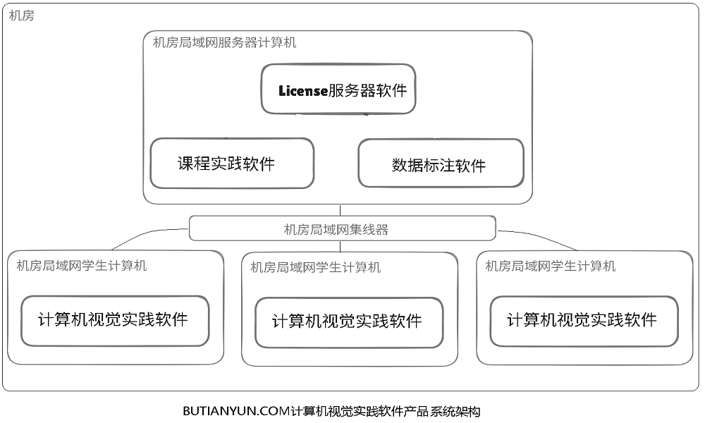

BUTIANYUN.COM视觉实践 A 系列 — 计算机视觉应用实践软件产品 V1.0版
BUTIANYUN.COM计算机视觉实践软件产品安装部署解决方案
BUTIANYUN.COM视觉实践 A 系列（计算机视觉应用实践软件产品）安装部署解决方案，
安装部署解决方案
BUTIANYUN.COM计算机视觉实践软件产品安装部署解决方案
机房局域网安装部署系统架构
将License服务器软件、课程实践软件、数据标注软件安装到一台计算机上作为服务器。
机房局域网安装部署解决方案系统架构：

服务器计算机安装
软硬件需求
服务器计算机建议内存8GB或更多，使用16GB内存或更多更稳定。操作系统软件必须为Microsoft Windows 10 X64版本。
License服务器软件安装
运行License服务器软件安装程序，根据License服务器软件操作手册完成软件安装，从软件供应商BUTIANYUN.COM获取软件产品License，安装软件产品License。
License服务器软件启动运行以后，视觉实践软件才能启动运行。
License服务器软件为视觉实践软件提供在线联网验证服务。
BUTIANYUN.COM提供的交付物包括了License服务器软件的安装程序以及操作手册。
MySQL数据库服务器软件安装:
MySQL数据库服务器软件是免费开源软件。>
课程实践软件和数据标注软件使用MySQL数据库服务器存储教学实践产生的数据信息。
建议安装MySQL Server（Community）免费开源版本： 获取MySQL数据库服务器安装程序
获取最新版本： 获取数据库服务器安装程序最新版本
如果按照课程实践软件和数据标注软件的操作手册设定root密码，那么课程实践软件和数据标注软件能免设定直接启动运行。
课程实践软件安装
运行课程实践软件安装程序，完成软件安装。
课程实践软件提供了计算机视觉实践的课表、课程、实践、课件的管理和查看功能。实践课教师能随时控制学生对这些信息的可见范围。
数据标注软件安装:
运行数据标注软件安装程序，完成软件安装。
数据标注软件提供了计算机视觉实践的模型训练所需的数据标注功能，以产生训练所需的数据集。
学生群体能使用Web浏览器软件对一个数据集进行分组标注，以快速完成数据标注过程。
系统设定
如果课程实践软件、数据标注软件，在License服务器软件所在的计算机上安装，那么默认即可正常运行，不需做任何设定。
如果课程实践软件、数据标注软件安装在另外的计算机上，那么必须设定License服务器软件所在计算机的IP和端口的系统变量。
具体步骤参考软件产品交付物中这些软件的操作手册。
学生计算机安装
软硬件需求
学生计算机建议内存8GB或更多。使用Intel CPU + 16GB内存，模型训练速度更快、软件运行更稳定。
操作系统必须为Microsoft Windows 10 X64版本。
浏览器软件建议使用Microsoft Edge浏览器150或更高版本。
部分实践软件针对Intel CPU做了优化。
部分实践软件使用了Intel OpenVINO开源框架。
部分实践软件为桌面图形窗口界面，部分实践软件为控制台命令行界面，课程实践软件和数据标注软件为Web界面。
设定系统变量
按照BUTIANYUN.COM License服务器软件的操作手册，在学生计算机上设定License服务器软件所在计算机的IP和端口的系统变量。
安装软件程序
把14大技术主题70个实践的所有软件程序全部拷贝到学生计算机上。总磁盘空间约40GB左右。
获取实践素材
软件供应商不提供实践素材。
实践课教师合规从网络上获取实践素材，或者使用AI合规生成实践素材，或者合规实际拍摄产生实践素材。
实践教学时能通过课程实践软件管理各种实践素材。
实践素材包括：
- 测试数据集
- 测试图片
- 测试视频
- 测试参数
- 测试模型
视觉实践软件用到的开源数据集。教学实践可从网络合规获取开源数据集。
视觉实践软件用到的部分测试图片。教学实践可用AI合规生成测试图片，或者合规获取实际图片作为测试图片。
视觉实践软件用到的部分测试视频。教学实践可用AI合规生成测试视频，或者合规获取实际视频作为测试视频。
视觉实践软件用到的其它参数文件。教学实践可参考示例测试参数文件，编写更多的测试参数文件。
视觉实践软件用到的已训练的模型。包括PyTorch模型、YOLO模型、 ONNX模型、OPENVINO模型。
视觉实践软件的全部程序都能指定测试数据集、测试图片、测试视频、测试参数、测试模型。、